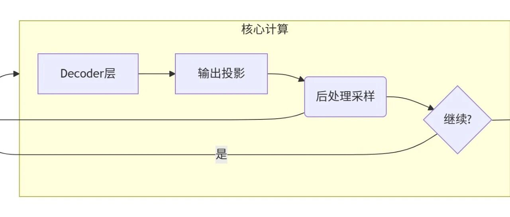

Transformer的推理流程详解--从零实现一个Transformer（二）
引言
generate函数如何作为总控引擎 orchestrates 整个生成流程，阐明分组查询注意力（GQA）与旋转位置编码（RoPE）如何高效协同，揭示KV缓存机制为何是长文本生成的速度关键，并剖析温度调节、Top-K、Top-P等后处理策略如何共同塑造模型的创造性与确定性。引言
一、generate函数与总体架构
1.用户输入预处理 2.Decoder层 3.全连接层和后处理层 4.循环逻辑
二、实现模型功能的具体函数
1.输入层函数 1.1apply_chat_template函数 1.2embedding函数 2.Decoder层函数 2.1自注意力函数gqa 2.2前馈神经网络函数mlp 2.3Decoder层总函数decoder_layer 2.4前向传播函数forward 3.全连接与后处理层（输出层） 3.1全连接层 3.2后处理
三、重要的工具模块
1.KVcache模块 2.旋转编码模块（Rope） 3.归一化模块（Rmsnorm）
四、总结
输入阶段
用户输入文本
预处理
Embedding
Decoder层（循环N次）
自注意力机制（包括QKV线性变换，旋转位置编码，SDPA注意力计算）
前馈神经网络（FFN又名MLP）（包括门控线性层和SiLU激活层）
输出阶段
全连接层
后处理

def generate(self, user_input):input_ids = Noneposition_id = Nonetext_len = 0prompt = self.apply_chat_template(user_input)answers = ""self.kv_cache.clear()for _ in range(self.max_new_tokens):prompt_ids, embeddings = self.embedding(prompt)input_ids = prompt_ids if input_ids is None else input_idsif position_id is None:text_len = prompt_ids.size()[-1]position_id = torch.arange(text_len).reshape(1, text_len)else:position_id = torch.tensor([[text_len]])text_len += 1states = self.module_forward(embeddings, position_id)logits = self.lm_head(states)next_token_id = self.generation.next_token_id(logits, input_ids)next_token = self.tokenizer.decode(next_token_id)input_ids = torch.cat([input_ids, next_token_id[:, None]], dim=-1)prompt = next_tokenif self.generation.is_token_eos(next_token_id):breakanswers += next_tokenif self.verbose:print(f"下一个词: {next_token} (ID: {next_token_id})")return answers
这个函数直观展现了模型如下的思考过程。
用户输入 → 预处理 → Embedding → Decoder × N → 全连接 → 后处理 → 输出prompt = self.apply_chat_template(user_input)prompt_ids, embeddings = self.embedding(prompt)
states = self.module_forward(embeddings, position_id)这一层调用了forward函数，实际上，forward函数会将Decoder层反复调用，从而完善输出内容，一般会调用六次左右，Decoder层将在下文提及。logits = self.lm_head(states)next_token_id = self.generation.next_token_id(logits, input_ids)next_token = self.tokenizer.decode(next_token_id)input_ids = torch.cat([input_ids, next_token_id[:, None]], dim=-1)prompt = next_token
def apply_chat_template(self, prompt):messages = [{"role": "system", "content": "你是一个乐于助人的AI助手"},{"role": "user", "content": prompt}]return self.tokenizer.apply_chat_template(messages,tokenize=False,add_generation_prompt=True)def embedding(self, input: str):input_ids = self.tokenizer.encode(input, return_tensors="pt")word_embeddings = torch.nn.functional.embedding(input_ids, self.model.model.embed_tokens.weight)return input_ids, word_embeddings
prompt），并将其包装成一个符合模型训练格式的完整对话。系统提示是模板中的额外条件："你是一个乐于助人的AI助手"。这设置了AI的角色和行为准则，引导模型生成更符合助手机器的回复。这个函数输出一个格式化后的、包含对话上下文和生成提示符的长字符串。这个输出就是图片中 "Pre处理" 模块的结果，它将被送入下一个模块。
self.model.model.embed_tokens.weight)以将每一个词转化为向量。 [batch_size, sequence_length, hidden_size]。这就是文本的数值化表示。

def gqa(self, layer_idx, states, position_id):seq_length = states.size()[-2]query_states = torch.nn.functional.linear(states,self.model.model.layers[layer_idx].self_attn.q_proj.weight,self.model.model.layers[layer_idx].self_attn.q_proj.bias,)key_states = torch.nn.functional.linear(states,self.model.model.layers[layer_idx].self_attn.k_proj.weight,self.model.model.layers[layer_idx].self_attn.k_proj.bias,)value_states = torch.nn.functional.linear(states,self.model.model.layers[layer_idx].self_attn.v_proj.weight,self.model.model.layers[layer_idx].self_attn.v_proj.bias,)query_states = query_states.view(1, seq_length, self.config.num_attention_heads, self.feature_per_head)key_states = key_states.view(1, seq_length, self.config.num_key_value_heads, self.feature_per_head)value_states = value_states.view(1, seq_length, self.config.num_key_value_heads, self.feature_per_head)query_states = query_states.transpose(1, 2)key_states = key_states.transpose(1, 2)value_states = value_states.transpose(1, 2)kv_cached_seq_len = seq_length + self.kv_cache.get_cached_length(layer_idx)cos = self.rope.cos_matrix[:kv_cached_seq_len]sin = self.rope.sin_matrix[:kv_cached_seq_len]query_states, key_states = self.rope.apply_rotary_pos_emb(query_states, key_states, cos, sin, position_id)key_states, value_states = self.kv_cache.update(key_states, value_states, layer_idx)key_states = torch.repeat_interleave(key_states, repeats=self.groups, dim=1)value_states = torch.repeat_interleave(value_states, repeats=self.groups, dim=1)is_causal = seq_length > 1attention_out = torch.nn.functional.scaled_dot_product_attention(query_states, key_states, value_states, is_causal=is_causal)attention_out = attention_out.transpose(1, 2)attention_out = attention_out.reshape(1, seq_length, self.config.hidden_size)attn_out = torch.nn.functional.linear(attention_out, self.model.model.layers[layer_idx].self_attn.o_proj.weight)return attn_out
query_states = torch.nn.functional.linear(states,self.model.model.layers[layer_idx].self_attn.q_proj.weight,self.model.model.layers[layer_idx].self_attn.q_proj.bias,)key_states = torch.nn.functional.linear(states,self.model.model.layers[layer_idx].self_attn.k_proj.weight,self.model.model.layers[layer_idx].self_attn.k_proj.bias,)value_states = torch.nn.functional.linear(states,self.model.model.layers[layer_idx].self_attn.v_proj.weight,self.model.model.layers[layer_idx].self_attn.v_proj.bias,)
query_states, key_states = self.rope.apply_rotary_pos_emb(query_states, key_states, cos, sin, position_id)query_states = query_states.view(1, seq_length, self.config.num_attention_heads, self.feature_per_head)key_states = key_states.view(1, seq_length, self.config.num_key_value_heads, self.feature_per_head)value_states = value_states.view(1, seq_length, self.config.num_key_value_heads, self.feature_per_head)query_states = query_states.transpose(1, 2)key_states = key_states.transpose(1, 2)value_states = value_states.transpose(1, 2)kv_cached_seq_len = seq_length + self.kv_cache.get_cached_length(layer_idx)cos = self.rope.cos_matrix[:kv_cached_seq_len]sin = self.rope.sin_matrix[:kv_cached_seq_len]query_states, key_states = self.rope.apply_rotary_pos_emb(query_states, key_states, cos, sin, position_id)
key_states, value_states = self.kv_cache.update(key_states, value_states, layer_idx)key_states = torch.repeat_interleave(key_states, repeats=self.groups, dim=1)
key_states = torch.repeat_interleave(key_states, repeats=self.groups, dim=1)value_states = torch.repeat_interleave(value_states, repeats=self.groups, dim=1)is_causal = seq_length > 1attention_out = torch.nn.functional.scaled_dot_product_attention(query_states, key_states, value_states, is_causal=is_causal)attention_out = attention_out.transpose(1, 2)attention_out = attention_out.reshape(1, seq_length, self.config.hidden_size)attn_out = torch.nn.functional.linear(attention_out, self.model.model.layers[layer_idx].self_attn.o_proj.weight)return attn_out
最后，程序会复制K和V并且完成注意力公式的运算，并且通过投影将生成的矩阵融合成输入形态准备交给前馈神经网络层。
2）前馈神经网络mlp
def mlp(self, layer_idx, states):gate_proj = torch.nn.functional.linear(states, self.model.model.layers[layer_idx].mlp.gate_proj.weight)up_proj = torch.nn.functional.linear(states, self.model.model.layers[layer_idx].mlp.up_proj.weight)down_proj = torch.nn.functional.linear(torch.nn.functional.silu(gate_proj) * up_proj,self.model.model.layers[layer_idx].mlp.down_proj.weight)return down_proj
前馈神经网络在自注意力之后出场，它是为了通过非线性融合的方式更好的融合句意特征，它通过（（门控投影（gate_proj）+silu函数）*上投影）->下投影的方式完成了多个特征的糅合。这些投影矩阵是从torch架构中直接引用的。
3）Decoder层总函数 decoder_layer
def decoder_layer(self, layer_idx, states, position_id):residual = statesstates = self.activation.forward(states, self.model.model.layers[layer_idx].input_layernorm.weight)states = self.gqa(layer_idx, states, position_id)states = states + residualresidual = statesstates = self.activation.forward(states, self.model.model.layers[layer_idx].post_attention_layernorm.weight)states = self.mlp(layer_idx, states)states = states + residualreturn states
为了简化程序，我们将Decoder层简化为一个函数。
这个函数的思路非常简单，得到输入->归一化并且调用注意力gpa加上残差->归一化并且调用前馈神经网络mlp加上残差->输出
归一化：
states= self.activation.forward(states, self.model.model.layers[layer_idx].input_layernorm.weight)states = states + residualdef module_forward(self, states, position_id):for layer_idx in range(self.config.num_hidden_layers):states = self.decoder_layer(layer_idx, states, position_id)states = self.activation.forward(states, self.model.model.norm.weight)return states
让数据流在多个Decoder层中不断向前传播，数据会依次通过num_hidden_layers 个 Transformer 层，这个参数可以自由设置，一般为6。
3.全连接与后处理层（输出层）
def lm_head(self, states):last_hidden_state = states[:, -1, :]logits = torch.nn.functional.linear(last_hidden_state, self.model.lm_head.weight)return logits
这是全连接层函数，它会将生成序列的最后一个token（新生成的）提取出来，再通过torch里面的权重矩阵将其投影到词汇表空间从而得到初始得分矩阵。
2）后处理
本模型的后处理分几步：
重复处理->温度处理->topk取样->topp取样->归一化->多项式取样
后处理类完整代码
# Qwen2 生成类（后处理）class Qwen2Generation:def __init__(self, generation_config) -> None:self.generation_config = generation_configdef is_token_eos(self, token_id):return token_id in self.generation_config.eos_token_iddef topk_logits_warper(self, logits):filter_value = -float("Inf")top_k_temp = min(self.generation_config.top_k, logits.size(-1))indices_to_remove = logits < torch.topk(logits, top_k_temp)[0][..., -1, None]logits_processed = logits.masked_fill(indices_to_remove, filter_value)return logits_processeddef topp_logits_warper(self, logits):min_tokens_to_keep = 1filter_value = -float("Inf")sorted_logits, sorted_indices = torch.sort(logits, descending=False)cumulative_probs = sorted_logits.softmax(dim=-1).cumsum(dim=-1)sorted_indices_to_remove = cumulative_probs <= (1 - self.generation_config.top_p)sorted_indices_to_remove[..., -min_tokens_to_keep:] = 0indices_to_remove = sorted_indices_to_remove.scatter(1, sorted_indices, sorted_indices_to_remove)logits_processed = logits.masked_fill(indices_to_remove, filter_value)return logits_processeddef temperature_logits_warper(self, logits):logits_processed = logits / self.generation_config.temperaturereturn logits_processeddef repetition_penalty_logits_processor(self, input_ids, logits):score = torch.gather(logits, 1, input_ids)score = torch.where(score < 0,score * self.generation_config.repetition_penalty,score / self.generation_config.repetition_penalty,)logits_processed = logits.scatter(1, input_ids, score)return logits_processeddef logits_wrap_process(self, input_ids, logits):logits_processed = self.repetition_penalty_logits_processor(input_ids, logits)logits_processed = self.temperature_logits_warper(logits_processed)logits_processed = self.topk_logits_warper(logits_processed)logits_processed = self.topp_logits_warper(logits_processed)return logits_processeddef next_token_id(self, logits, input_ids):next_token_logits = self.logits_wrap_process(input_ids, logits.to(torch.float32))probs = torch.nn.functional.softmax(next_token_logits, dim=-1)next_token_id = torch.multinomial(probs, num_samples=1).squeeze(1)return next_token_id
重复处理函数
def repetition_penalty_logits_processor(self, input_ids, logits):score = torch.gather(logits, 1, input_ids)score = torch.where(score < 0,score * self.generation_config.repetition_penalty,score / self.generation_config.repetition_penalty,)logits_processed = logits.scatter(1, input_ids, score)return logits_processed
先提取重复logit的初始得分
score = torch.gather(logits, 1, input_ids)再应用重复惩罚：负数乘惩罚系数，正数除惩罚系数
score = torch.where(score < 0,score * self.generation_config.repetition_penalty,score / self.generation_config.repetition_penalty,)
最后将处理后的值放回原位
温度处理函数
def temperature_logits_warper(self, logits):logits_processed = logits / self.generation_config.temperaturereturn logits_processed
预先定义了温度常量，将分数logit除以预设温度。
若温度 < 1：放大logits差异，概率分布更尖锐（更确定性）； 若温度 > 1：缩小logits差异，概率分布更平滑（更多样性）； 若温度 = 1：无影响。
topk&topp采样函数
def topk_logits_warper(self, logits):filter_value = -float("Inf")top_k_temp = min(self.generation_config.top_k, logits.size(-1))indices_to_remove = logits < torch.topk(logits, top_k_temp)[0][..., -1, None]logits_processed = logits.masked_fill(indices_to_remove, filter_value)return logits_processeddef topp_logits_warper(self, logits):min_tokens_to_keep = 1filter_value = -float("Inf")sorted_logits, sorted_indices = torch.sort(logits, descending=False)cumulative_probs = sorted_logits.softmax(dim=-1).cumsum(dim=-1)sorted_indices_to_remove = cumulative_probs <= (1 - self.generation_config.top_p)sorted_indices_to_remove[..., -min_tokens_to_keep:] = 0indices_to_remove = sorted_indices_to_remove.scatter(1, sorted_indices, sorted_indices_to_remove)logits_processed = logits.masked_fill(indices_to_remove, filter_value)return logits_processed
topk的处理方式是移除得分低于第k大的token，具体操作是将这些token得分设为负无穷，topp则是将所有得分从低到高排序，计算softmax概率之后移除概率和小于（1-p）的所有token，最后映射到原顺序。
next_token_id函数是调用这个类中其他函数的窗口。除此之外，它还起到归一化和多项式取值的作用。
def next_token_id(self, logits, input_ids):next_token_logits = self.logits_wrap_process(input_ids, logits.to(torch.float32))probs = torch.nn.functional.softmax(next_token_logits, dim=-1)next_token_id = torch.multinomial(probs, num_samples=1).squeeze(1)return next_token_id
对最后一层进行归一化
probs = torch.nn.functional.softmax(next_token_logits, dim=-1)next_token_id = torch.multinomial(probs, num_samples=1).squeeze(1)
class KVCache:def __init__(self) -> None:self.KCache: List[torch.tensor] = []self.VCache: List[torch.tensor] = []self.verbose = Falsedef clear(self):self.KCache = []self.VCache = []def update(self, new_key_states, new_value_states, layer_idx):if len(self.KCache) <= layer_idx:self.KCache.append(new_key_states)self.VCache.append(new_value_states)else:self.KCache[layer_idx] = torch.cat([self.KCache[layer_idx], new_key_states], dim=-2)self.VCache[layer_idx] = torch.cat([self.VCache[layer_idx], new_value_states], dim=-2)return self.KCache[layer_idx], self.VCache[layer_idx]def get_cached_length(self, layer_idx) -> int:if len(self.KCache) <= layer_idx:return 0return self.KCache[layer_idx].shape[-2]def print(self, layer_idx):if self.verbose:if len(self.KCache) == 0:print("缓存为空")else:print(f"层 {layer_idx} 缓存token数量: ", self.KCache[layer_idx].shape[-2])
dim=0 | ||
dim=1 | ||
dim=2 | ||
dim=3 |
def update(self, new_key_states, new_value_states, layer_idx):if len(self.KCache) <= layer_idx:# 该层缓存不存在，创建新缓存self.KCache.append(new_key_states)self.VCache.append(new_value_states)else:# 该层缓存已存在，拼接新数据self.KCache[layer_idx] = torch.cat([self.KCache[layer_idx], new_key_states], dim=-2)self.VCache[layer_idx] = torch.cat([self.VCache[layer_idx], new_value_states], dim=-2)return self.KCache[layer_idx], self.VCache[layer_idx]
KV缓存模块会检测缓存的大小并且更新它，在dim=2的层面进行拼接。
总体工作效果：
第一次生成: [token1] → 计算KV并缓存第二次生成: [token1, token2] → 只需计算token2的KV，token1从缓存读取第三次生成: [token1, token2, token3] → 只需计算token3的KV
2.旋转编码模块（Rope）
class Rope:def __init__(self, hidden_size, max_position_embeddings):self.hidden_size = hidden_sizeself.max_position_embeddings = max_position_embeddingsself.sin_matrix, self.cos_matrix = self.matrix@propertydef matrix(self):seq_list = torch.arange(0, self.hidden_size, 2, dtype=torch.int64).float()seq_list = seq_list / self.hidden_sizeseq_list = 10000**seq_listtheta = 1.0 / seq_listt = torch.arange(self.max_position_embeddings, dtype=torch.int64).type_as(theta)freqs = torch.outer(t, theta)emb = torch.cat((freqs, freqs), dim=-1)# 使用float32代替bfloat16，因为CPU对bfloat16支持有限cos_val = emb.cos().to(torch.float32)sin_val = emb.sin().to(torch.float32)return sin_val, cos_valdef rotate_half(self, x):x1 = x[..., : x.shape[-1] // 2]x2 = x[..., x.shape[-1] // 2 :]return torch.cat((-x2, x1), dim=-1)def apply_rotary_pos_emb(self, q, k, cos, sin, position_ids):cos = cos[position_ids]sin = sin[position_ids]q_embed = (q * cos) + (self.rotate_half(q) * sin)k_embed = (k * cos) + (self.rotate_half(k) * sin)return q_embed, k_embed
该模块基于数学公式

matrix函数是用来求得旋转编码矩阵的函数，具体步骤是先创建一个频率序列，按照角度归一化，再用旋转编码公式求得具体矩阵。
逐句解析：
# 创建频率序列: [0, 2, 4, ..., hidden_size-2]seq_list = torch.arange(0, self.hidden_size, 2, dtype=torch.int64).float()# 归一化: [0, 2/hidden_size, 4/hidden_size, ...]seq_list = seq_list / self.hidden_size# 计算频率基数: 10000^(2i/d)seq_list = 10000**seq_list# 计算角度参数: θ_i = 1/10000^(2i/d)theta = 1.0 / seq_list# 创建位置序列: [0, 1, 2, ..., max_position_embeddings-1]t = torch.arange(self.max_position_embeddings, dtype=torch.int64).type_as(theta)# 计算外积: mθ (位置m × 角度θ_i)freqs = torch.outer(t, theta)# 重复频率以便后续使用: [freqs, freqs]emb = torch.cat((freqs, freqs), dim=-1)# 计算cos和sin值cos_val = emb.cos().to(torch.float32)sin_val = emb.sin().to(torch.float32)
而对于剩下两个函数，rotate函数是对shape进行拼接，而apply_rotary_pos_emb函数则是找到对应Q和K的旋转值，它们主要涉及一些三角函数计算，这里不再细说。不过要注意，这个函数的处理层是dim=-1特征层，而不是前文的序列长度层，这里容易混淆。
3.归一化模块（Rmsnorm）
class RmsNorm:def __init__(self, eps):self.eps = epsdef forward(self, states, weights):states = states.to(torch.float32)variance = states.pow(2).mean(-1, keepdim=True)states = states * torch.rsqrt(variance + self.eps)return weights * states.to(weights.dtype)
这个函数围绕其核心公式以展开

eps是一个很小的常数，用以防止取倒数时除以0。
归一化的核心公式为variance = mean(x²) = (x₁² + x₂² + ... + xₙ²) / n
所以我们只需要将所有元素平方和除以元素数量即可得到归一化的均方值variance。将其加上eps并且开根号，最后取倒数即可。注意要保持矩阵形态不然无法用于state 投影（keepdim=True）。
variance = states.pow(2).mean(-1, keepdim=True)states = states * torch.rsqrt(variance + self.eps)
如果有学习权重，我们将其乘以归一化结果得到优化后的结果即可。
apply_chat_template函数将原始用户输入结构化，嵌入系统提示和对话上下文，形成模型期待的标准化格式。随后，embedding函数扮演着“词典”的角色，利用预训练好的 embed_tokens.weight矩阵，将离散的文本令牌（Tokens）转换为高维的、富含语义信息的连续向量（Embeddings），为后续的数学计算做好准备。module_forward函数驱动，循环调用多个（num_hidden_layers）完全相同的Decoder层。每一层都包含两个关键子模块：1）自注意力机制（GQA）：该模块首先将输入向量通过线性变换生成查询（Query）、键（Key）、值（Value）三大矩阵。利用旋转位置编码（RoPE） 为Q、K注入精确的位置信息，解决了传统Transformer无法有效区分词汇位置的难题。随后，通过KV缓存（KVCache） 机制高效地复用之前所有时间步的计算结果，极大提升了长文本生成的效率。最后，使用 scaled_dot_product_attention计算注意力得分，让模型能够聚焦于上下文中最重要的信息。2）前馈神经网络（MLP）：注意力计算后的结果会送入一个门控结构的FFN（如SiLU激活函数），进行非线性的特征变换和融合，进一步增强模型的表达能力。 整个Decoder层大量使用了残差连接和RMSNorm归一化技术，确保了梯度在深层次网络中的稳定传播，有效缓解了训练（推理）中的梯度消失问题。
lm_head函数（一个全连接层）被投影到整个词汇表上，得到每个候选词的初始得分（logits）。这并非终点，后处理策略在此扮演了“质量控制”和“创造力调节”的角色：1）重复惩罚（Repetition Penalty）：主动降低已生成 tokens 的得分，有效避免模型陷入循环重复。 2）温度调节（Temperature）：通过一个超参数控制输出分布的尖锐或平滑程度，从而平衡生成结果的确定性与多样性。 3）采样策略（Top-K & Top-P）：Top-K保留得分最高的K个候选，Top-P保留概率累积和达到P的最小候选集，两者都是为了在保证生成质量的前提下，筛选出合理的选择范围。 4）多项式采样：对处理后的概率分布进行随机采样，最终确定下一个生成的token。此token被解码回文本后，又会作为下一轮推理的输入，如此循环往复，直至生成结束符（EOS）或达到长度限制。